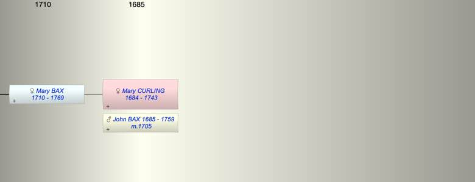

| [Index] |
| Mary CURLING (1684 - 1743) |
|  |
| b. 1684 |
| m. 07 Feb 1705 John BAX (1685 - 1759) at St Mildred Canterbury |
| d. 14 Jun 1743 aged 59 |
| Children (1): |
| Mary BAX (1710 - 1769) |
| Grandchildren (5): |
| George CURLING (1731 - 1739), Thomas CURLING (1734 - 1735), Catherine CURLING (1736 - 1812), John CURLING (1739 - ), Thomas CURLING (1741 - ) |
| Events in Mary CURLING (1684 - 1743)'s life | |||||
| Date | Age | Event | Place | Notes | Src |
| 1684 | Mary CURLING was born | bap 12 Sep 1684 St L ex FS | |||
| 07 Feb 1705 | 21 | Married John BAX (aged 20) | St Mildred Canterbury | both of Ramsgate, ex FMP | |
| 21 Feb 1710 | 26 | Birth of daughter Mary BAX | Ramsgate | Note 1 | |
| 14 Jun 1743 | 59 | Mary CURLING died | died aged 58 ex Ash Church MI | ||
| Note 1: baptised 5 Mar 1710 Ebenezer Independent, Ramsgate |
| Created on a Mac™ using iFamily for Mac™ on 8 Oct 2023 |